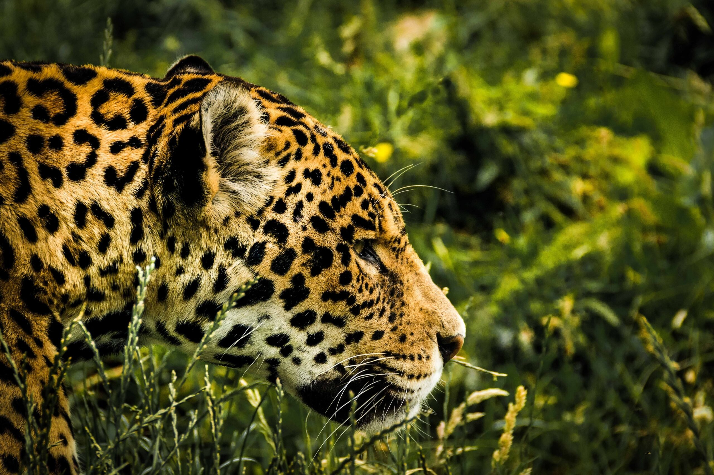

Relação com a Natureza
As comunidades caiçaras vivem em harmonia com o meio ambiente, praticando pesca artesanal, agricultura de subsistência e coleta de frutos, respeitando os ciclos naturais.

Os caiçaras são um grupo tradicional do litoral brasileiro, que vive principalmente na região entre o Paraná e o Rio de Janeiro. vivendo a beira de rios e vivendo da pesca


Os caiçaras utilizam plantas medicinais em seu dia a dia, com saberes passados oralmente entre gerações. A erva-baleeira é usada para dores e inflamações, enquanto o boldo-do-Brasil ajuda na digestão.
Os caiçaras também usam alguns animais com fins medicinais, segundo seus saberes tradicionais. como peixes targarugas e porcos
As comunidades caiçaras vivem em harmonia com o meio ambiente, praticando pesca artesanal, agricultura de subsistência e coleta de frutos, respeitando os ciclos naturais.
O conhecimento tradicional caiçara é transmitido oralmente entre gerações, incluindo saberes sobre pesca, construção de canoas, festas religiosas e uso de plantas medicinais.
A identidade caiçara é marcada por uma forte ligação com o território, linguagem própria, culinária típica e celebrações como o Fandango Caiçara, reconhecido como patrimônio cultural.
Celebração religiosa
Procissões, cantos e partilhas reforçam a união e fé da comunidade caiçara.
Ritual de celebração
Cores, movimento e ancestralidade em um giro coletivo de alegria.
Saberes tradicionais
Rituais com rezas e ervas que conectam o corpo e o espírito à natureza.